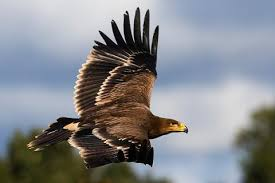

El buitre leonado es un ave planeadora más que voladora,
pues apenas mueve las alas en el aire, permaneciendo cernido en
las altas corrientes durante las horas de más calor del día.6
Prefiere levantarse sobre corrientes ascendentes que se
corresponden con fenómenos aerológicos que levantan grandes masas
de aire caliente.

El águila imperial ibérica (Aquila adalberti) es una especie
de ave accipitriforme de la familia Accipitridae.
Es una de las aves endémicas de la península ibérica.
El águila imperial ibérica es un ave muy amenazada,
en 2011 se estimó una población de unas 300 parejas.
El jabalí es un mamífero artiodáctilo de la familia de los suidos
presente en Europa, aunque hay también
subespecies en América, África y Asia.
El jabalí se puede encontrar en la península ibérica,
donde su población es abundante y es considerado como pieza de caza mayor.
El lince boreal, europeo, eurasiático o común (Lynx lynx)
es una especie de mamífero carnívoro de la familia Felidae.
Es el representante más común y conocido del género Lynx.
Es un felino de tamaño medio,
predador nativo de los bosques europeos y siberianos.